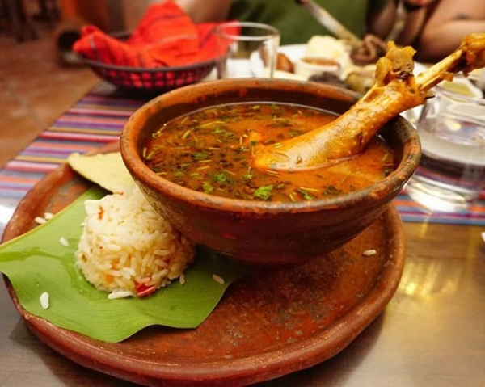

Kaq iq

El Kak’ik es conocido como caldo colorado de pavo o chunto, tradicional de Cobán. Al igual que el pepián y el jocón, fue declarado Patrimonio Cultural Intangible por el Ministerio de Cultura y Deportes, según Acuerdo Ministerial 801-2007.
La palabra Kak’ik es de origen maya y significa rojo y chile, por cada sílaba respectiva.
Este platillo se sirve siempre con arroz para agregar al caldo y pequeños tamales de masa de maíz sazonados sin nada más que sal, que son llamados blancos o pochitos.
Ingredientes
- 2 libras de pavo cortado en pedazos grandes
- Media libra de tomate
- 4 onzas de miltomate
- 2 chiles guaques grandes
- 1 chile pasa grande
- 1 chile pimiento rojo grande
- 6 dientes de ajo grandes
- 1 cebolla mediana
- 4 ramas de cilantro
- 10 ramas de hierbabuena
- Media onza de ajonjolí
- 4 granos de pimienta gorda o pimienta de chapa
- 4 a 5 granos de pimienta
- 1 onza de pepitoria
- Tallos de cebolla
- Achiote
- Sal
- Chile cobanero en polvo
Preparación
- Primero, cocer el pavo con un poco de sal y un ramo hecho con tallos de cebolla, hierbabuena y cilantro en suficiente agua.
- Asegurarse de que el agua cubra la carne ya que habrá de hervir y una parte se consumirá.
- Para hacer el recado, primero dorar la pepitoria, el ajonjolí y los granos de pimienta.
- Asar el chile pimiento, los chiles, ajo, cebolla, el tomate y el miltomate.
- Luego, licuar en seco el recado y colarlo.
- Retirar el ramo con el que se cocinó el pavo y agregar el recado.
- Hervir durante 10 minutos y sazonar con un poco de sal, achiote y chile cobanero al gusto.
- Cuidar que el pavo no se recueza.
- Finalmente, servir en pedazos grandes con un poco de arroz, tortillas o tamalitos al gusto.